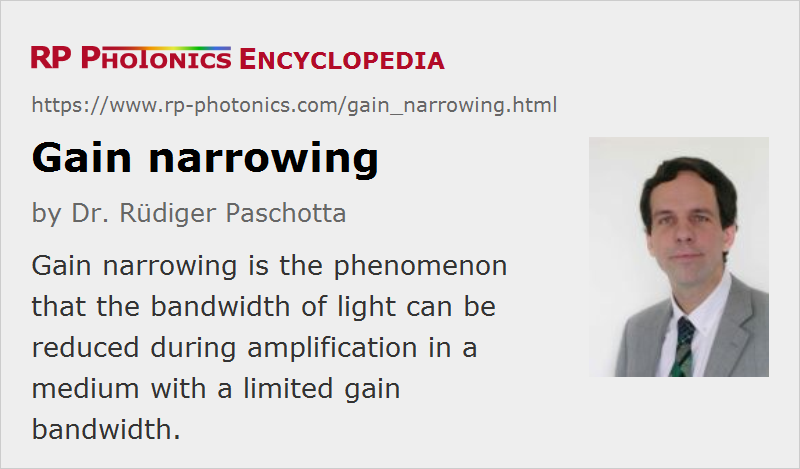

Gain Narrowing
Definition: the phenomenon that the bandwidth of light can be reduced during amplification in a medium with a limited gain bandwidth
Categories: lasers, optical amplifiers, physical foundations
How to cite the article; suggest additional literature
Author: Dr. Rüdiger Paschotta
When light with a certain bandwidth is amplified in an optical amplifier medium with limited gain bandwidth, this generally leads to a reduction in the optical bandwidth, i.e., to a narrower optical spectrum, and that phenomenon is called gain narrowing. It is the consequence of the fact that the center region of the optical spectrum experiences a higher gain than the spectral wings. The main consequences are experienced in lasers and amplifiers for ultrashort pulses.
In a mode-locked laser, gain narrowing tends to compress the optical spectrum of the circulating ultrashort pulse(s). For nearly transform-limited pulses, this directly translates into a tendency to increase the pulse duration, and in most cases this is one of the main factors influencing the achievable pulse duration. For example, in an actively mode-locked laser, the steady-state duration of the circulating pulse is normally determined by a balance between pulse stretching via gain narrowing and pulse shortening by the modulator (→ Kuizenga–Siegman theory). The situation is different for soliton mode locking, where the pulse duration for a given amount of intracavity chromatic dispersion is largely determined by nonlinearities and dispersion, but the amount of gain narrowing sets a limit on how much the intracavity dispersion can be reduced without making the pulses unstable, and thus also strongly influences the shortest possible pulse duration in this case.
Gain narrowing is also relevant for amplifiers, in particular for those with high gain and application to very short pulses. For example, regenerative amplifiers for the amplification of few-cycle pulses have to be carefully optimized to avoid significant narrowing of the pulse spectrum. Apart from using a very broadband gain medium, it is essential to minimize intracavity losses, and another option is to use an intracavity optical filter which can to some extent compensate gain narrowing by introducing higher loss for those frequency components with highest gain (→ gain equalization).
It is important to realize that the strength of the gain-narrowing effect depends not only on the gain bandwidth of the amplifier medium, but also on the magnitude of the gain. For that reason, the importance of gain narrowing increases, e.g. in a mode-locked laser, as the resonator losses (which have to be balanced by gain) are increased. This explains why the shortest pulses from a certain type of laser are often achieved using an output coupler with small transmission, even though this tends to compromise the power efficiency and thus the achieved output power.
Questions and Comments from Users
Here you can submit questions and comments. As far as they get accepted by the author, they will appear above this paragraph together with the author’s answer. The author will decide on acceptance based on certain criteria. Essentially, the issue must be of sufficiently broad interest.
Please do not enter personal data here; we would otherwise delete it soon. (See also our privacy declaration.) If you wish to receive personal feedback or consultancy from the author, please contact him e.g. via e-mail.
By submitting the information, you give your consent to the potential publication of your inputs on our website according to our rules. (If you later retract your consent, we will delete those inputs.) As your inputs are first reviewed by the author, they may be published with some delay.
See also: gain, gain bandwidth, bandwidth, mode locking, mode-locked lasers, Kuizenga–Siegman theory, optical amplifiers, regenerative amplifiers, pulse duration
and other articles in the categories lasers, optical amplifiers, physical foundations
|  |
If you like this page, please share the link with your friends and colleagues, e.g. via social media:
These sharing buttons are implemented in a privacy-friendly way!